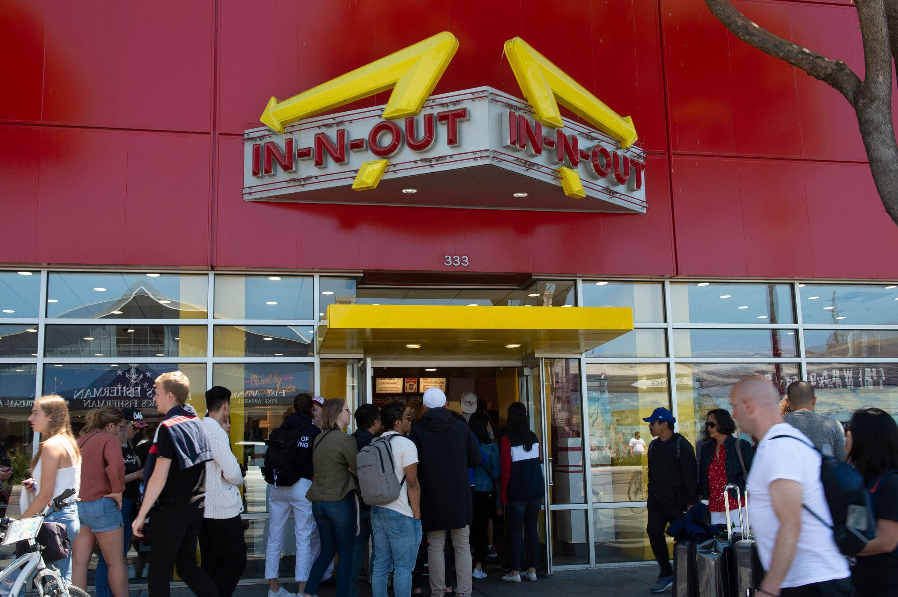
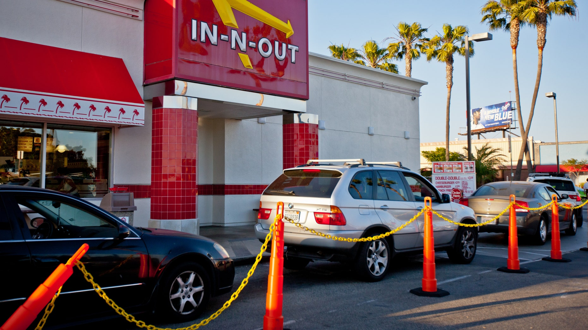

San Francisco temporarily closed an In-N-Out Burger for not checking customers’ vaccine status.

An In-N-Out in San Francisco has reopened for takeout after being temporarily shut down on Oct. 14 by the city’s department of health for violating Covid-19 health protocols by not checking patrons for proof of vaccination. It is the only restaurant in San Francisco to have been closed over the vaccinate mandate, the health department said in a statement.
San Francisco mandated in August that customers who dine indoors must show proof of full vaccination.
“Vaccination is particularly important in a public indoor setting where groups of people are gathering and removing their masks, factors that make it easier for the virus to spread. That is why San Francisco requires proof of vaccination for indoor dining,” the department said in a statement.
The In-N-Out, located in San Francisco’s popular Fisherman’s Wharf tourist area, has since reopened, but only for takeout.
In-N-Out acknowledged the enforcement violation, but called San Francisco’s indoor vaccination requirement “intrusive, improper, and offensive” governmental “overreach” in a statement from Arnie Wensinger, Chief Legal & Business Officer for the California burger chain.
The department of public health said it asked the restaurant to correct the violations on Sept. 24 after a complaint to the city. Inspectors from the department followed up with the location on Oct. 6 and found that the staff was still not asking patrons for proof of vaccination while dining indoors.
Inspectors attempted multiple times to bring the store into compliance, but In-N-Out refused to comply, resulting in a notice of closure.
“The business was instructed to cease all operations on site immediately because of the threat it poses to public health,” the department said.
In-N-Out said the store “properly and clearly” posted signs of local vaccination requirements, but also said it refused to become “the vaccination police for any government,” read the statement from Mr. Wensinger.
San Francisco shuts down In-N-Out for not enforcing jab mandate: 'We refuse to become the vaccination police'

The city of San Francisco temporarily closed an In-N-Out fast-food restaurant over the company’s refusal to force customers to prove they are vaccinated against the coronavirus.
The San Francisco Department of Public Health closed the Fisherman’s Wharf In-N-Out location on Oct. 14 after the popular burger joint did not check the vaccination status of customers, which violates an August mandate from the city requiring indoor diners to show proof of vaccination.
In-N-Out, which operates 358 locations across the western United States, is owned by devout Christian Lynsi Snyder and is well known for including Bible verses at the bottom of soda and milkshake cups.
"Our store properly and clearly posted signage to communicate local vaccination requirements," In-N-Out Burger’s Chief Legal and Business Officer, Arnie Wensinger said in a statement to Fox News. "After closing our restaurant, local regulators informed us that our restaurant Associates must actively intervene by demanding proof of vaccination and photo identification from every Customer, then act as enforcement personnel by barring entry for any Customers without the proper documentation."
"We refuse to become the vaccination police for any government," Wensinger declared, slamming the San Francisco Department of Health's requirements as "unreasonable, invasive, and unsafe" and accusing the city of asking restaurants to "segregate Customers" based on vaccine documentation.
"We fiercely disagree with any government dictate that forces a private company to discriminate against customers who choose to patronize their business," the statement said. "This is clear governmental overreach and is intrusive, improper, and offensive."
The store has since reopened, but indoor dining is not available.
In a statement to Fox News, the San Francisco Department of Health confirmed that the company was issued a notice of closure for the Fisherman's Wharf location on Oct. 14 for "noncompliance with the Safer Return Together Health Order." The department added that the company was warned multiple times before the closure notice was served.
"Vaccines remain our best tool to fight this disease and come out of the pandemic," the statement said. "Vaccination is particularly important in a public indoor setting where groups of people are gathering and removing their masks, factors that make it easier for the virus to spread. That is why San Francisco requires proof of vaccination for indoor dining. "